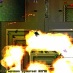
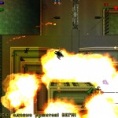

AnyCity
Автор: Volt
Дата релиза: 08.11.2011
Тема на форуме | Скачать архив
Полноценная карта для одиночной игры, включающая в себя четыре миссии, ночной режим, красивый миниатюрный городок и множество дополнительных объектов, не использованных в оригинальной игре (коробки, бутылки, баки, пожарные колонки на пешеходных зонах и т.п.). Архитектура приятна, по стилю и размерам зданий напоминает карту Преступный Петербург. Для отображения русского текста и во избежание ошибок несовместимости рекомендуется использовать русскую версию GTA2 от Буки.
{kind=link}
 
{kind=link}
{kind=link}
{kind=link}

NewHiddenSurpise
Автор: D@N
Дата релиза: 05.07.2008
Скачать архив
Честно говоря, от оригинала карты осталось довольно мало чего. Много продуманных мелочей, понравилось разделение территории по принадлежности к бандам игроков, так что всегда можно рассчитывать на помощь ботов. Особенно понравились разрушенные мосты с намеком на GTA3. Есть даже танк, но заполучить его весьма сложно. Сетевая игра обещает быть более чем живой;) Читайте readme от автора.


Mini
Автор: Sage
Дата релиза: 04.07.2004
Скачать архив
В первую очередь - это сетевая карта для дуэлей. Противникам не придется долго друг друга искать – все максимально компактно, динамика прежде всего. Раскидывать по противнику коктейлем Молотова или же аккуратно пробраться к гранатомету – решать только вам. Присутствуют все виды ручного оружия, поддержка до 4-х игроков. При запуске одиночной игры, можно потренироваться на боте, который играет неплохо, но в целях баланса при нем убраны некоторые объекты, т.к. сам он их подбирать не умеет.
{kind=link}

{kind=link}


{kind=link}
Dullswill
Автор: Sage
Дата релиза: 01.07.2004
Тема на форуме | Скачать архив
Вы играете роль все того же наемника, работающего на Zaibatsu. На небольшом полуострове враждуют две группировки – Yakudza и Zaibatsu. Сюжет состоит из 4-ех дней, между которыми игра сохраняется (незаметно и безоговорочно). Счастливый конец. Не забывайте о спрятаных по всей карте бонусах – без них пройти игру очень сложно. Ввиду не оптимального кода, багов самой игры и порой неадекватной сложности карты, в соответствующей теме есть список подсказок.


Gona in 60 seconds
Автор: Sauron
Дата релиза: 12.06.2001
Скачать архив
Карта создана по одноименному фильму «Угнать за 60 секунд». За минуту вам предстоит добраться до золотого Бенза и привести его к заказчику. Конечно не все так просто, начиная с того, что никаких стрелок на карте нету, и заканчая тем, что стоянка охраняется ребятами с автоматами, а добираться до нее придется по крышам домов перепрыгивая через колючий забор.
{kind=link}


Getaway
Автор: PillBoX
Дата релиза: 01.07.2004
Скачать архив
Вам предстоит поднимать бунт и бежать из тюрьмы. У вас будет несколько единомышлеников, которых прибьет со временем охрана, пистолет с одной обоймой, свиснутый у охранника, и все силы тюрьмы на предотвращение вашего побега!
Пишет PillBoX: «Концепция уровеня Getaway заключается в его размерах. Он компактный, события в нем происходят на небольшой территории, в сжатые сроки. Игрок строго ведется по уровню, отклонения не приветствуются. Ограничения создаются благодаря точному расчету типов оружия игрока и врагов, а так же их жизней. Лишний шаг приводит к нарушению хрупкого баланса «игрок/враг» в сторону последнего.»

{kind=link}

Agency chase
Автор: PillBoX
Дата релиза: 02.06.2001
Скачать архив
Эта миникарта сделана по мотивам «Погони за Тринити» из фильма «Матрица». Конечно это не «Матрица» и вы не Тринити, но ситуация сходная. Вы – освобожденный, и вашу линию засекли. Агенты придут за вами через секунды, и вы должны найти выход как можно скорее. Выход возможен только через кабельный телефон. Полиция и агенты блокировали выход из здания, так что единственный способ убраться – прыгать по крышам. Ваш оператор будет вести вас. Следуйте за стрелкой и все будет в порядке. Запомните – вы новичок, так что махать руками, останавливая пули и скакать как горный козел у вас не выйдет. Прыгайте ТОЛЬКО с края и держитесь подальше от копов и людей в черном. Если вас поймают, это конец игры. Вам придется начать сначала. И будте быстрее. Секунды решают все.
{kind=link}
{kind=link}
{kind=link}
Преступный Петербург
Автор: PillBoX
Дата релиза: 20.06.2000
Скачать архив
Во время игры за вами будет постоянно бегать и мочить кредитор, лучше избавьтесь от него сразу. Миссии требуют рациональный действий, с первого раза ничего не пройдете. В городе три «группировки» – Новые Русские, Чечены и ОМОН. По три задания на каждую. Неплохо спрятаные бонусы. К сожалению, при выполнении последней миссии игра вылетает с ошибкой, но благо она последняя.

{kind=link}


{kind=link}
Зарубежные разработчики
Тема про кооперативные карты
Зарубежный список карт на gtamp.com
Если есть достойные предложения - пишите описание, прикрепляйте скриншоты, добавим в этот раздел.